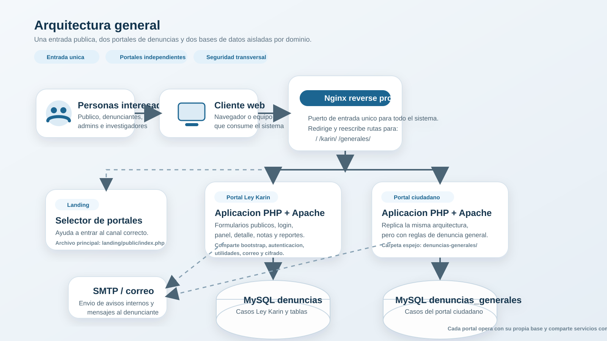
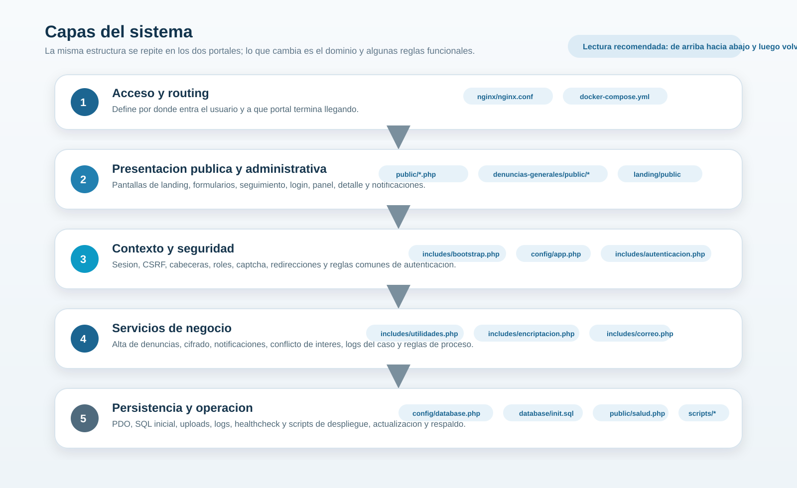
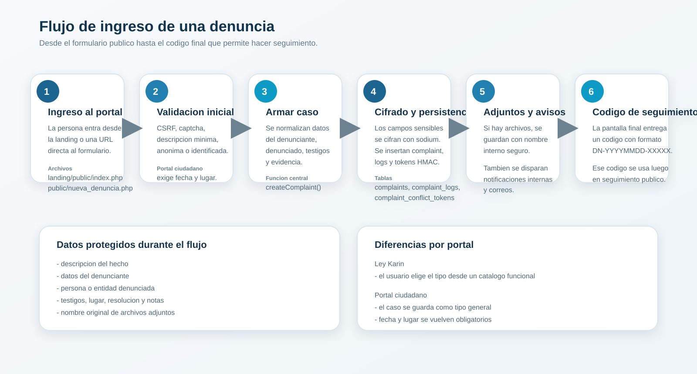
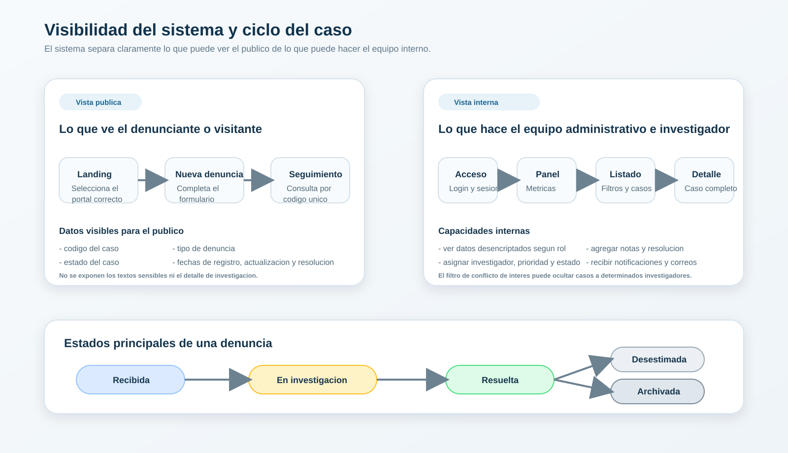

Presentar de manera clara y ordenada cómo está construido el sistema, cuál es su alcance y de qué forma responde a exigencias de confidencialidad, trazabilidad y continuidad operacional.
Landing pública, Portal Ley Karin, Portal de Denuncias Generales, bases de datos separadas, roles, seguridad, auditoría, reportes, notificaciones e infraestructura dockerizada.
| Organización Empresa Portuaria Coquimbo | Fecha 04 de mayo de 2026 | Versión Edición ejecutiva para presentación gerencial |
La solución implementada corresponde a una plataforma institucional de denuncias compuesta por dos portales especializados y un punto de entrada único. Su diseño permite separar materias asociadas a Ley Karin de aquellas vinculadas a denuncias generales, manteniendo independencia funcional y de datos entre ambos ámbitos.
Desde la perspectiva de la organización, el proyecto resuelve una necesidad concreta: disponer de un canal formal para la recepción y gestión de denuncias que combine facilidad de uso, resguardo de información sensible y capacidad de seguimiento. La arquitectura adoptada responde a esa exigencia mediante cifrado de datos, control por roles, auditoría de acciones y despliegue estructurado sobre contenedores.
En términos operativos, la plataforma no se limita a recibir antecedentes. También organiza el ciclo de vida del caso, restringe quién puede intervenir, entrega soporte para revisión interna y deja trazabilidad suficiente para supervisión y control.
3 superficies visibles: landing, portal Ley Karin y portal de denuncias generales |
2 bases de datos MySQL separadas por dominio de denuncia |
5 roles internos para operación, administración, lectura y auditoría |
1 punto de acceso externo centralizado mediante Nginx |
ConfidencialidadLos datos sensibles se almacenan cifrados y su lectura queda limitada a perfiles autorizados dentro de la aplicación. |
TrazabilidadLa plataforma registra actividad, cambios y eventos relevantes, facilitando revisión posterior y control interno. |
OperaciónLa solución se despliega en contenedores y contempla arranque, respaldo y actualización con criterios homogéneos. |
Propósito institucionalEl sistema fue concebido para ofrecer a la organización un canal formal, seguro y trazable para la recepción y gestión de denuncias. Su alcance no se limita al ingreso de antecedentes, sino que cubre también su administración, revisión, seguimiento y registro operacional. Problemas que resuelve
|
Alcance implementado
Decisión de diseño.
Ambos portales comparten una base técnica semejante, lo que favorece mantenimiento y consistencia, pero conservan independencia de datos y reglas para no mezclar dominios normativos distintos.
|
La arquitectura responde a un criterio simple: un único punto de entrada externo, dos aplicaciones separadas por naturaleza de denuncia y una base de datos exclusiva para cada una de ellas.
Todo el tráfico ingresa por Nginx, que actúa como puerta de entrada y mecanismo de enrutamiento. Desde allí se deriva la navegación hacia la landing pública o hacia uno de los dos portales. Cada portal opera sobre PHP y Apache, reutiliza módulos de seguridad y negocio, y se conecta únicamente con su propia base de datos MySQL.
| Componente | Rol dentro de la solución | Valor que aporta |
|---|---|---|
| Nginx | Canaliza y distribuye el tráfico entrante. | Centraliza el acceso y simplifica la exposición del sistema. |
| Landing | Orienta al usuario al canal correcto. | Disminuye errores de ingreso y mejora la experiencia inicial. |
| Portal Ley Karin | Gestiona denuncias laborales reguladas. | Permite un tratamiento específico según la normativa aplicable. |
| Portal de denuncias generales | Gestiona denuncias generales o institucionales. | Canaliza materias fuera del ámbito propio de Ley Karin. |
| Bases de datos separadas | Aíslan almacenamiento y operación por dominio. | Refuerzan orden, claridad administrativa y contención de riesgo. |

La solución se estructura en capas para facilitar mantenimiento, lectura técnica y evolución controlada. Este enfoque evita que la presentación, la seguridad, la lógica de negocio y la persistencia se mezclen innecesariamente, reduciendo complejidad y riesgo de error.
En la práctica, el sistema puede leerse desde la entrada del usuario hasta el almacenamiento de datos: primero el enrutamiento, luego las pantallas públicas e internas, después la capa de contexto y seguridad, a continuación los servicios de negocio y finalmente la persistencia y la operación.
Ventajas del enfoque
|
Lectura recomendadaPara comprender el proyecto conviene seguir el flujo natural de uso: acceso, pantallas, seguridad, negocio y base de datos. Esa secuencia coincide con la forma en que fue construido el sistema. |

El proceso central del sistema comienza en un formulario público y culmina con la generación de un código de seguimiento. Entre ambos extremos se ejecutan validaciones, cifrado, persistencia, registro de eventos y notificaciones internas.
La lógica fue diseñada para que el expediente nazca estructurado, con controles básicos de seguridad desde el primer momento. Eso significa que la información sensible no se persiste en texto abierto, que las acciones relevantes dejan trazabilidad y que el usuario obtiene un identificador único para consultar el estado de su caso sin exponer el contenido reservado.

Una característica central del proyecto es que la seguridad no descansa en una sola barrera. El sistema combina controles complementarios que actúan en distintos puntos del flujo, desde el ingreso de un formulario hasta la revisión de un expediente por parte del equipo interno.
Controles implementados
|
Principios de resguardo
|
La solución contempla una estructura de roles que separa administración general, gestión de usuarios, investigación, lectura controlada y auditoría. Esta definición responde a una necesidad de gobierno interno, control de acceso y prevención de privilegios excesivos.
| Rol | Función principal | Limitación relevante |
|---|---|---|
| Superadmin | Administra usuarios y puede operar denuncias. | Se mantiene sujeto al filtro de conflicto de interés. |
| Admin | Gestiona usuarios y soporte administrativo. | No accede al contenido de denuncias. |
| Investigador | Revisa, asigna, actualiza y resuelve casos. | No gestiona usuarios y puede quedar excluido por conflicto. |
| Viewer | Consulta denuncias en modo lectura. | No modifica ni accede a contenido sensible desencriptado. |
| Auditor | Revisa actividad del sistema y trazabilidad. | No administra usuarios ni accede al detalle del expediente. |
Esta segregación ordena el trabajo interno y fortalece la confiabilidad del canal. Desde la perspectiva gerencial, evita que una misma cuenta concentre tareas incompatibles y deja una base clara para supervisión y control.

La plataforma se despliega mediante Docker Compose, lo que permite levantar todos los servicios con una configuración uniforme y repetible. Esta decisión reduce dependencia de ajustes manuales por servidor y mejora la capacidad de reinstalación, respaldo y continuidad operacional.
| Servicio | Función operacional |
|---|---|
| nginx | Puerta de entrada y proxy inverso. |
| landing | Selector inicial de portales. |
| app | Portal Ley Karin sobre PHP y Apache. |
| db | Base de datos del portal Ley Karin. |
| app-generales | Portal de denuncias generales sobre PHP y Apache. |
| db-generales | Base de datos del portal de denuncias generales. |
| phpmyadmin | Apoyo de administración en ambientes de desarrollo. |
Prácticas operativas contempladas
|
Valor para la organizaciónEl enfoque reduce fricción en soporte, facilita despliegues consistentes y deja una base favorable para automatización futura, incluyendo monitoreo, pruebas operativas y eventuales pipelines de integración o entrega continua. |
Reducción de riesgoSe disminuye la exposición de información sensible y se ordena el acceso a expedientes de acuerdo con responsabilidades concretas. |
Mayor controlLa solución deja evidencia de accesos, cambios y acciones relevantes, lo que favorece revisión posterior y control interno. |
Capacidad de evoluciónLa base técnica permite ampliar funcionalidades sin necesidad de replantear la arquitectura completa. |
La plataforma desarrollada constituye una base sólida para la recepción y gestión institucional de denuncias. Su principal fortaleza no reside únicamente en la existencia de formularios o paneles administrativos, sino en la forma en que combina confidencialidad, segregación de funciones, trazabilidad y operación controlada.
Desde una mirada gerencial, se trata de una solución técnicamente consistente, ordenada para su mantenimiento y suficientemente flexible para evolucionar. En ese sentido, el proyecto no debe entenderse como un sitio web aislado, sino como un sistema formal de gestión de casos con capacidad real de sostener operación institucional.